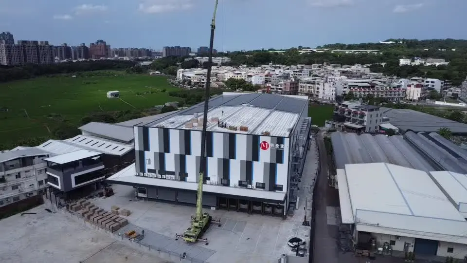

太陽能 EPC 與專業施工
屋頂與棚架光電、模組版鋪、支架、逆變器、交直流配電與併網工程。
- 案場會勘與容量模擬
- 結構／電氣設計與送審
- 施工、檢測、驗收與維運

OUR POSITION
小農綠電是一家具備案場評估、系統設計、行政送審、工程建置與能源整合能力的綠能工程服務公司。
我們把結構、電氣、施工動線、設備介接與後續維運放進同一套執行框架，降低跨工種溝通與現場變更風險。
CAPABILITIES
依案場條件與用電需求，整合最適合的工程路徑。
屋頂與棚架光電、模組版鋪、支架、逆變器、交直流配電與併網工程。
依負載曲線規劃太陽能、儲能與備援電力，完成設備介接及能源管理。
以空拍、照片、圖面與現勘資料建立配置方案，提前檢討設備與工程界面。

FLAGSHIP PROJECT · TAICHUNG
從版鋪、3D協調、固定座與鋁軌施工，到設備及管線整合，完整呈現小農綠電的現場執行能力。
DELIVERY
空拍、量測、屋況與用電資料盤點
容量、結構、電氣、3D與效益試算
送審、採購、工序整合與品質管理
檢測、監控、保固與長期維護
YOUR SITE
填寫施工地址與聯絡電話，我們會先確認案場條件，再與您聯繫安排評估。